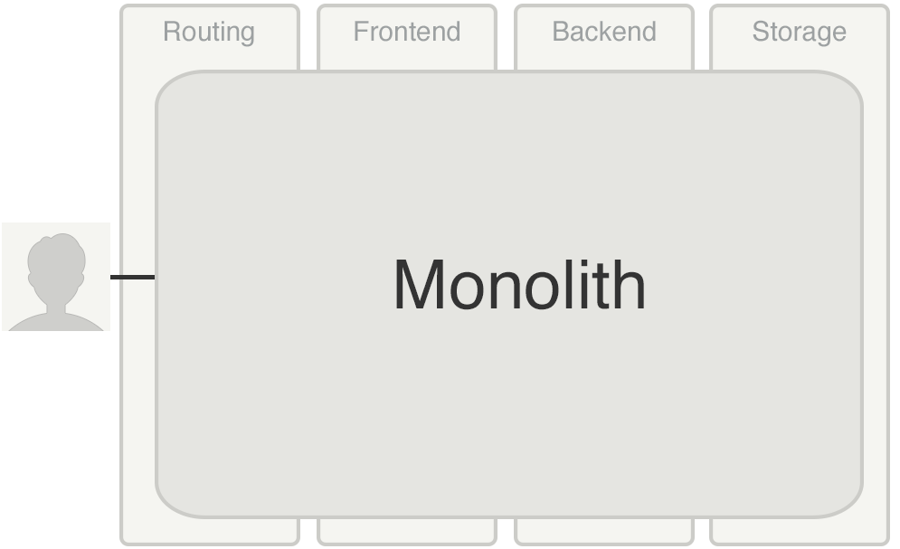
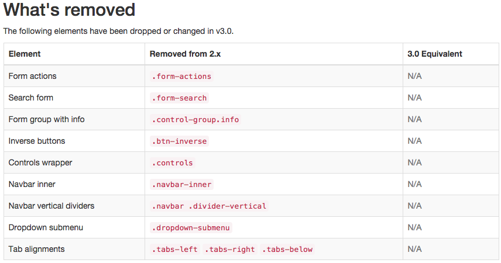
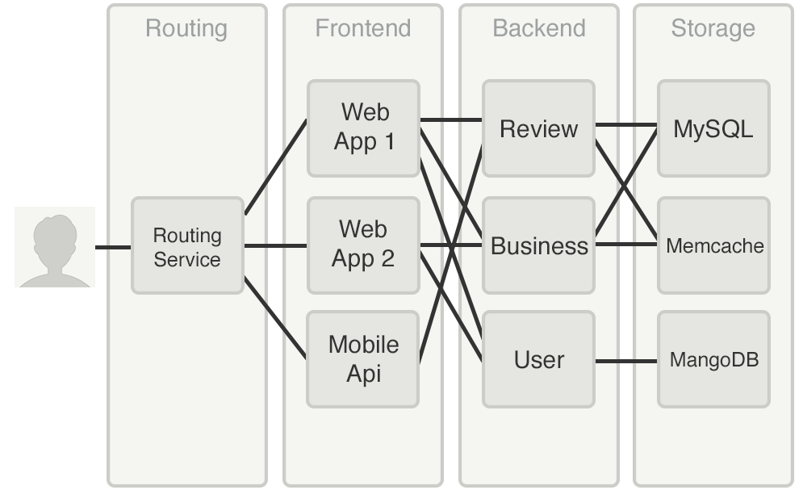
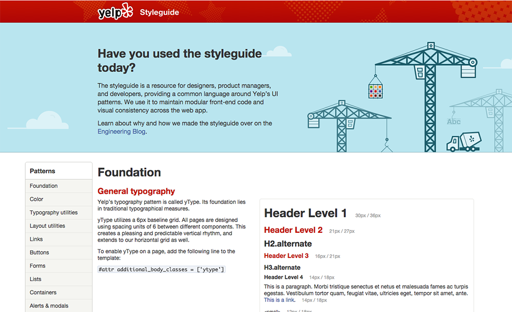
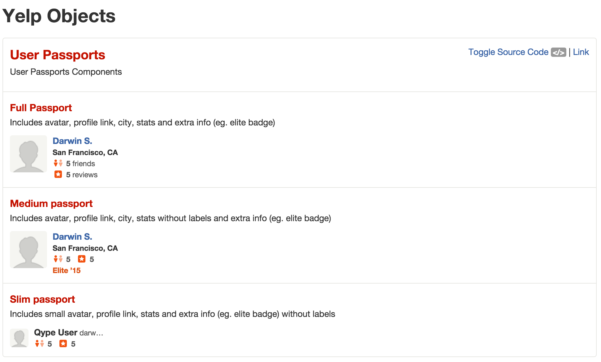

Frontend Services
@kenstruys
- Hello, I'm Ken Struys and I'm an Engineering Manager at Yelp
- Today I'm going to talk about how we're scaling our engineering team Services
- more specifically services created for Frontend Web Application
Yelp's Mission
Connecting people with great local businesses
- Yelp is a app and site that connects people to get local businesses
- Making those connections on a global scale across multiple platforms requires
a large engineering team
- Being able to add additional engineers to the team is a requirement to
accomplish our mission

- Today we're going to talk about monolithic application
- Every company starts as one
- They sneak up very quickly as a problem
- My goal today is to help you recongize the symtoms
- Provide suggestions to help
- So, what are the biggest issues we've seen
Team Growth
- If you're company does well, engineering will grow
- Yelp grew and is still growing
- Our monolith has been a problem
Development
Write Code/Tests
Run Build/Tests
Code Review
Merge
- At yelp, all development is done in git feature branches
In those git branches engineers:
- Write code and tests for their code
- Run builds and regression tests
- Have their features and code reviewed by peers
- and finally,
- Merge their branch into a branch for deployment
Ship it
- We take a set of developer changes and deploy them together to production
- Until a feature branch ships, the development process doesn't matter
- When a feature ships, that's where engineers actually impact local business
- Engineers feel great every time they see their code reach production
- The higher the frequency you can release code, the more often an engineer will be happy
- Shipping often is so ingrained in our culture,
- we make sure every engineer gets something in production in their first week
- Unfortunately when shipping multiple branches together to production
- In some cases it's nessisary to revert the entire deploy branch
- We've observed it's become more difficult as we've grown
`99%`
Chance a Branch is Bug Free
- The reason it's become worse over time is really easy to understand
- Lets say you have great engineers, and the probability
- a single engineers branch is bug free is 99%
- Don't get me wrong, the engineers at Yelp as amazing,
- but even our best probably don't get to 99%
- I'm probably being generous
`99% * 99% = 98%`
2 Bug Free Branches
- When you take two engineers and put them into the same deployment
- The overall probability of success goes down by a small amount
`99%^30 = 74%`
30 Bug Free Branches
- If you take 30 branches and deploy them
- The overall probability of success starts to get really low
`99%^n`
`n > 500 = 0`
- This is what's called an exponential decay function
- If you continue to grow, it just gets worse
- Monolith applications fall into this trap and
it goes from a minor annoyance to a serious problem
Monolithic Code Changes
- Another big reason monolith aren't great is,
- making large code migrations is awful for a single engineer
- They deal with merge conflicts
- and they don't ship very often
- If you've ever gone through a migration like bootstrap 2 to 3 in a million line codebase
- you know how awful this can be

- it can often be unclear what you should do.
- In many cases it requires coordination with many teams
yelp-main
Yelp's monolith
Mostly Python
MVC Sites
Offline batches
- We have a monolith at Yelp
- Mostly python code
- with a handful of different MVC Sites
- Sites for business owners, consumers like yourselves
- and administrative sites
- and scripts that run periodically called batches
yelp-main 2011
60 Engineers
2 scheduled daily deploys
5 - 8 changes per deploy
- When I first joined Yelp, the monoith worked well
- We had around 60 engineers
- We deployed to product twice a day, with 5-8 changes per deployment
yelp-main 2011-2013
60 → 200 Engineer
More products, code, tests
3 scheduled daily deploys
- from 2011 to 2013 we grew a lot
- With more engineers, more products, more code and more tests
- More tests can also slow down a deployment if you don't build
- a sophisticated infrastructure to support all those tests
- We managed to get up to 3 deloys to support the growth
Deployments Get Scary
30+ changes per deploy
50,000 Tests, 200 Selenium Tests
No one dev knows every error case
Rollbacks start to become common
- That's around the time when deployments and code changes got scary
- We became more paranoid with tests
- No once can possible know how things could break
- If you were working on search and you're on ads,
- You might break something in their code and not know
- And rollbacks start to become more common
What is a Service?
Provides a service to other services
Often done via HTTP, Thrift, protobuff
Example: The Facebook API
- So what is a service?
- Provides a service to other services
- Communication between services is done with HTTP
- Think something like the Facebook API. Yelp talks to Facebook via and API.
How to Service
Usually a separate repository
Own set of tests
Own deployment
Backwards compatible
Share code via Libraries
- Services typically use a separate git repo
- Have a set of test to ensure it's working as expected
- Deploys independently from other services
- Backwards compatiable changes
- Share code between services with libraries
What is a Library?
A collection of functions/classes/values
Have their own build/tests
Libraries can depend on other libraries
Multiple services can depend on libraries
Libraries are versioned
Example: jQuery
- A library is similar to a service but it provides functions, classes, and values
- to services
- Similar to services they have their own set of tests
- A both services and libraries can depend on other libaries
- Libraries are versioned to allow people to use both old and new copies
- jQuery is a great example. You might use jQuery 1.9 and I use 1.8.
- Great, we know what services are
- And if you look at your monolith, you can probably break the code into a couple categories
of things to service
- For us we thought about Routing, Frontends, Backend/Business Logic and Storage
- Now What?...
- If you look this stuff up online
- you mostly find talks where people do this:
- "Well, had this monolith"

- And... then we had services
- Wait, what? But how?
Yelp 2013
Backend Services
Monolith API
Everything New → Service
- In 2013, we started with our backend
- If you go down this route, you'll most likely also want to make your monolith
have an API
- Everything new, we obviously a service
Backend Service Problems
Availability, Performance, Query Complexity
def most_recent_review_for_user(user_id)
business, review = DB.query('
SELECT *
FROM review
JOIN user ON user.id=review_archive.user_id
JOIN business ON review.business_id=business.id
WHERE user.id=${user_id}
ORDER BY review.time_created
LIMIT 1;
', user_id)
return business, review
You'll Need Frontend/Product Help
- You'll need help from Frontend Engineers, Product Managers and Designers
to decide how to handle availability
2014
Something Still Isn't Right...
- In 2014, we still felt like something wasn't quite right.
- Let's say we get to this world where the backend is well isolated
- The critical path from User to the Backend Still requires the monolith
- If we want to have use impact, you need a frontend
Frontend Services
HTML Rendering Services
- That's when we decided we need to make Frontend Services
- These services would return HTML instead of JSON
- Users would be able to go from the routing layer directly to a UI outside of the monlith
- And our product teams would be able to iterate extremely quickly on this well isolated
section of a site
Frontend Isn’t Easy Either
Very few talks about Frontend SOA
Keep Product Consistency
SOA Education
- Very few engineers talk about Frontend SOA (Service Orient Arch!)
- Unlike backend services, you can't just pick any technology to render JSON
- You'll want to make user transitions between the monolith and services seamless
Where did we start?
Move fast, fail early
A page as a unit
Make it faster next time
Leverage existing SOA
- We're probably going to make mistakes, make them really early
- We decided to move 1 page at a time from the monolith to a service
- Whatever we move, should make the next things faster to mvoe
- Don't reinvent the wheel, try to use the existing serivce stack
git://services/styleguide

yelp.com/styleguide
- If you haven't seen it before, check it out.
- It's basically like bootstrap on steroids specifically for Yelp

- Also more complicated widgets like all the ways we show users on yelp.com
- Our Product managers, designers and engineers all use our styleguide for documentation
- and creating a common design language
- It also helps our designers to avoid reinventing a existing frontend pattern
git://services/styleguide
No backend
English only
Low Impact
Renders everything useful
There we a number of reasons to pull the styleguide first
- Absolutely no backend
- It's 1 of the only english only pages on yelp
- If we break it, it's not a disaster
- Renders most of the useful stuff
- Will make the next page fast on the frontend
How do we share code?
git://yelp-main
git://services/styleguide
- So we spun up this new service
- We needed a way to share code between the monolith and the new service
- Just like with backend services, libraries are going to be the answer for code sharing
PyPi + Bower
- For backend code we use PyPI
- For frontend code we use Bower
- We run internal versions of both of these package managers inside yelp
> cat styleguide/bower.json
{
"name": "service-styleguide",
"dependencies": {
"jquery": "1.8.2",
"yelp_styleguide": "0.10.3"
}
}
- In every service, we include a file called bower.json
- In the case of the styleguide service, it's really simple
- the service is a simple wrapper providing documentation for our library called yelp_styleguide
$ bower install
...
bower jquery#1.8.2 install jquery#1.8.2
bower yelp_styleguide#0.10.3 install yelp_styleguide#0.10.3
...
$ tree bower_components/ -L 1
bower_components/
├── jquery
├── yelp_styleguide
- When you run bower install, bower downloads all of the packages
- and installs them into a directory called bower_components
yelp_styleguide
SCSS (underscored)
JavaScript
Images/Icons
Tests
bower.json
@import "bower_components/yelp_styleguide/assets/scss/grid_layout";
Releasing Styleguide Service
Trivial HTTP proxy in monolith
Delete all code/tests in monolith
Semantic Versioning
MAJOR.MINOR.PATCH
- Use semantic versioning on libraries
- The MAJOR version tells you if there's an incompatible API change
- The MINOR version tells you if there was functionality added but nothing backward incompatable
- The PATCH version tells you a bug fix was made
Example
1.8.2 → 1.8.3
1.8.5 → 1.9.3
1.9.1 → 2.0.0
- In the first example jump from one version to another should just fix problems
- The second example you'll have a new API but everything else should continue to work
- The third example you need to make sure you update your code to handle the changes
Semver in Bower
*
1.8 - 1.9
~1
1.9.2
- You can make libraries and services have various restrictions on what versions they use
- For example in the first example we're saying I need jQuery, I don't care what version
- in the second example we're saying, anything from 1.8-1.9 is fine, any patches between are acceptable
- in the third that syntax says anything in the 1 release is fine, minors and patches are good
- in the last example we're being very explicit, we only work with the 2nd patch version of 1.9
Min Versions in Libraries
> cat yelp_styleguide/bower.json
{
"name": "yelp_styleguide",
"dependencies": {
"jquery": ">=1.8",
}
}
Build/Test Libraries Daily
On Failure:
Make your library compatible
... or add a max version
Release a new version
Pin Deps in Services
> cat styleguide/bower.json
{
"name": "service-styleguide",
"dependencies": {
"jquery": "1.8.2",
"yelp_styleguide": "0.10.3"
}
}
We Made Mistakes
Let's make a monolith!